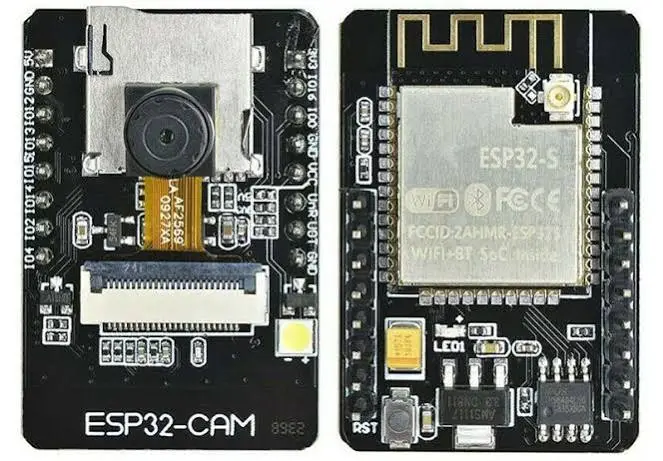
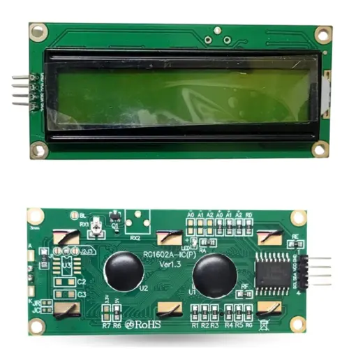
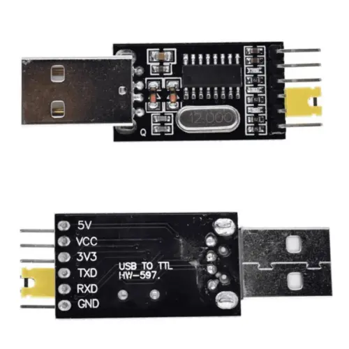
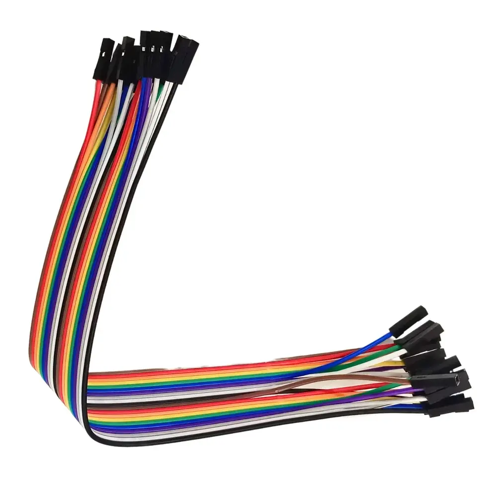
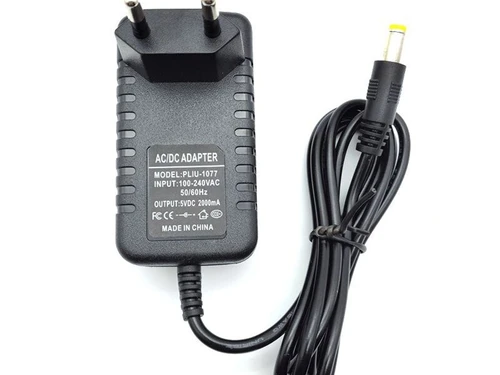

Hardware
1. AI-Thinker ESP32-CAM
ESP32-CAM is a low-cost ESP32-based development board with onboard camera, small in size. It is an ideal solution for IoT application, prototypes constructions and DIY projects.
The board integrates WiFi, traditional Bluetooth and low power BLE , with 2 high- performance 32-bit LX6 CPUs. It adopts 7-stage pipeline architecture, on-chip sensor, Hall sensor, temperature sensor and so on, and its main frequency adjustment ranges from 80MHz to 240MHz
Fully compliant with WiFi 802.11b/g/n/e/i and Bluetooth 4.2 standards, it can be used as a master mode to build an independent network controller, or as a slave to other host MCUs to add networking capabilities to existing devices.
ESP32-CAM can be widely used in various IoT applications. It is suitable for home smart devices, industrial wireless control, wireless monitoring, QR wireless identification, wireless positioning system signals and other IoT applications. It is an ideal solution for IoT applications.
1.1 Features
- Up to 160MHz clock speed，Summary computing power up to 600 DMIPS
- Built-in 520 KB SRAM, external 4MPSRAM
- Supports UART/SPI/I2C/PWM/ADC/DAC
- Support OV2640 and OV7670 cameras, Built-in Flash lamp
- Support image WiFI upload
- Support TF card
- Supports multiple sleep modes
- Embedded Lwip and FreeRTOS
- Supports STA/AP/STA+AP operation mode
- Support Smart Config/AirKiss technology
- Support for serial port local and remote firmware upgrades (FOTA)
1.2 Specifications
- SKU: DFR0602
- SPI Flash: default 32Mbit
- RAM: built-in 520 KB+external 4MPSRAM
- Dimension: 27*40.5*4.5（±0.2）mm/1.06*1.59*0.18”
- Bluetooth: Bluetooth 4.2 BR/EDR and BLE standards
- Wi-Fi: 802.11b/g/n/e/i
- Support Interface: UART, SPI, I2C, PWM
- Support TF card: maximum support 4G
- IO port: 9
- Serial Port Baud-rate: Default 115200 bps
- Image Output Format: JPEG( OV2640 support only ), BMP, GRAYSCALE
- Spectrum Range: 2412 ~2484MHz
- Antenna: onboard PCB antenna, gain 2dBi
- Transmit Power: 802.11b: 17±2 dBm (@11Mbps); 802.11g: 14±2 dBm (@54Mbps); 802.11n: 13±2 dBm (@MCS7)
- Receiving Sensitivity: CCK, 1 Mbps : -90dBm; CCK, 11 Mbps: -85dBm; 6 Mbps (1/2 BPSK): -88dBm; 54 Mbps (3/4 64-QAM): -70dBm; MCS7 (65 Mbps, 72.2 Mbps): -67dBm
- Power consumption: Maximum 310mA@5V; Minimum 6mA@5V
- Security: WPA/WPA2/WPA2-Enterprise/WPS
- Power supply range: 5V
- Operating temperature: -20 °C ~ 85 °C
- Sorage environment: -40 °C ~ 90 °C, < 90%RH
- Weight: 10g

I2C Serial Interface 16x2 LCD
This is I2C interface 16x2 LCD display module, a high-quality 2 line 16 character LCD module with on-board contrast control adjustment, backlight and I2C communication interface. For Arduino beginners, no more cumbersome and complex LCD driver circuit connection.
The real significance advantages of this I2C Serial LCD module will simplify the circuit connection, save some I/O pins on Arduino board, simplified firmware development with widely available Arduino library.
Specifications
- Compatible with Arduino Board or other controller board with I2C bus
- SKU: DSP-1182
- Display Type: Negative white on Blue backlight
- I2C Address: 0x38-0x3F (0x3F default)
- Supply voltage: 5V
- Interface: I2C to 4bits LCD data and control lines
- Contrast Adjustment: built-in Potentiometer
- Backlight Control: Firmware or jumper wire
- Board Size: 80x36 mm

CH340G USB-to-TTL (USB-to-UART)
The CH340G USB-to-Serial Module (often called a FTDI breakout or TTL adapter) is a small, thumb-sized circuit board that lets you plug raw electronic wires directly into your computer's USB port. It takes the CH340G chip, combines it with a built-in USB connector (like Type-C or Micro-USB), and breaks out the chip's pins into a convenient row of metal header pins (usually VCC, GND, TX, RX, DTR, and CTS).
This module is used as an external tool to program "bare-bones" microcontrollers (like the Pro Mini) that don't have their own built-in USB ports, or to listen to live data and debug electronics by wiring the module's RX/TX pins straight to the device's communication lines.
Specifications
- Built-in USB to TTL Transfer chip
- Designed to be used for USB to TTL electronic projects.
- Core Chip: CH340G
- Pins: TXD, RXD, VCC, GND, 5V, and 3V3
- Logic Voltage: Selectable 3.3V or 5V using an onboard jumper cap or switch
- Size: 55mm x 16mm

Female-to-Female (F2F) jumper wires
Flexible electrical cables used to create quick, solderless connections in electronics projects. Both ends of the wire feature hollow DuPont socket connectors enclosed in plastic housings, which are specifically designed to slide over standard 0.1-inch (2.54 mm) male pin headers.
These wires are invaluable for fast prototyping, allowing you to link separate hardware components—such as a microcontroller and an external sensor—without requiring a breadboard or permanent soldering.
Specifications
- Connector Pitch: Standard 2.54mm (0.1 inches)
- Current Rating: Typically 1A to 2A max/wire
- Voltage: Up to 36V DC
- Wire Gauge: 26AWG or 28AWG

DC Adaptor
An external hardware device that converts high-voltage alternating current (AC) from a standard wall outlet into a stable, low-voltage direct current (DC) of 5 volts with a maximum current capacity of 2 amperes.
It typically utilizes switch-mode power supply (SMPS) technology to efficiently step down and regulate the voltage, making it a reliable and constant power source for sensitive low-voltage electronics like single-board computers, routers, CCTV cameras, and LED controllers without needing complex battery-charging protocols.
For this project any normal 5V 2A mobile charger will work.
Specifications
- Output Voltage: 5V
- Output Current: upto 2A
- Output Type: DC
